CS180 · Saksham
[WRITE: where you took the photos, what phone, and how you shot them. e.g. stood in one spot and turned the phone, tried to keep 40–70% overlap.]
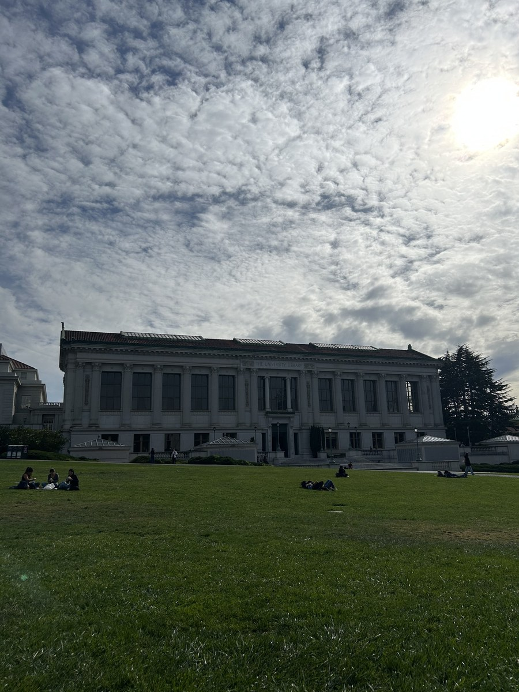
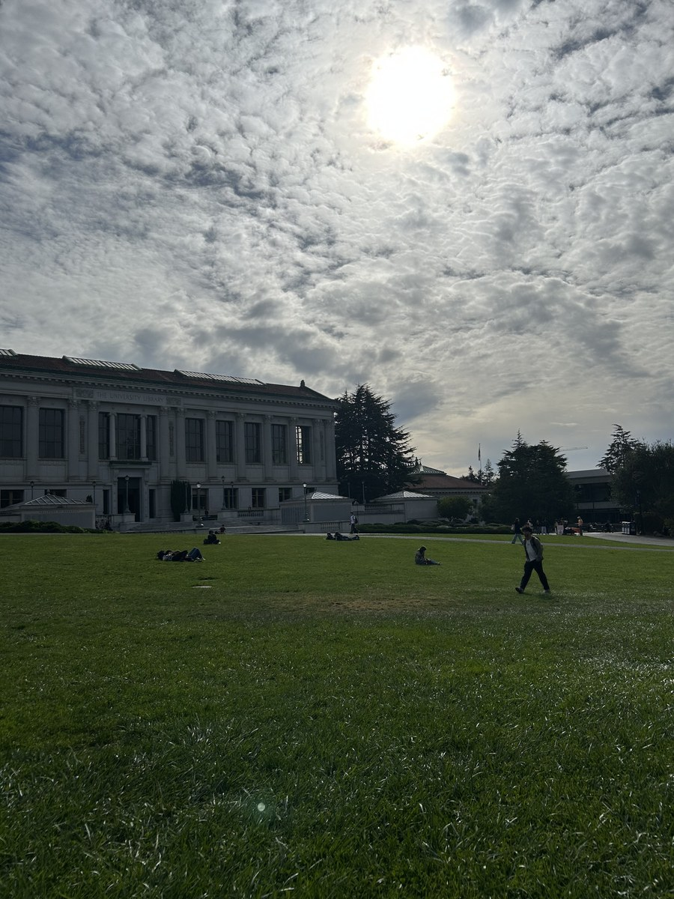
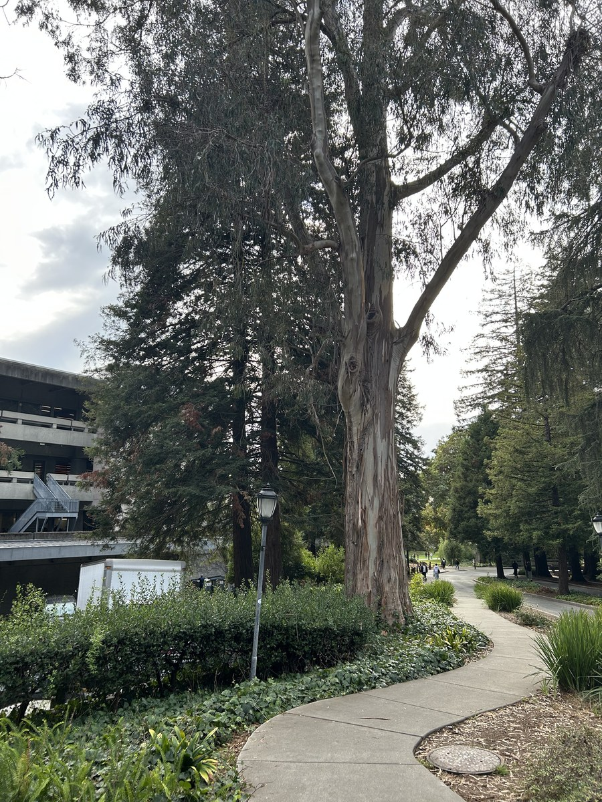
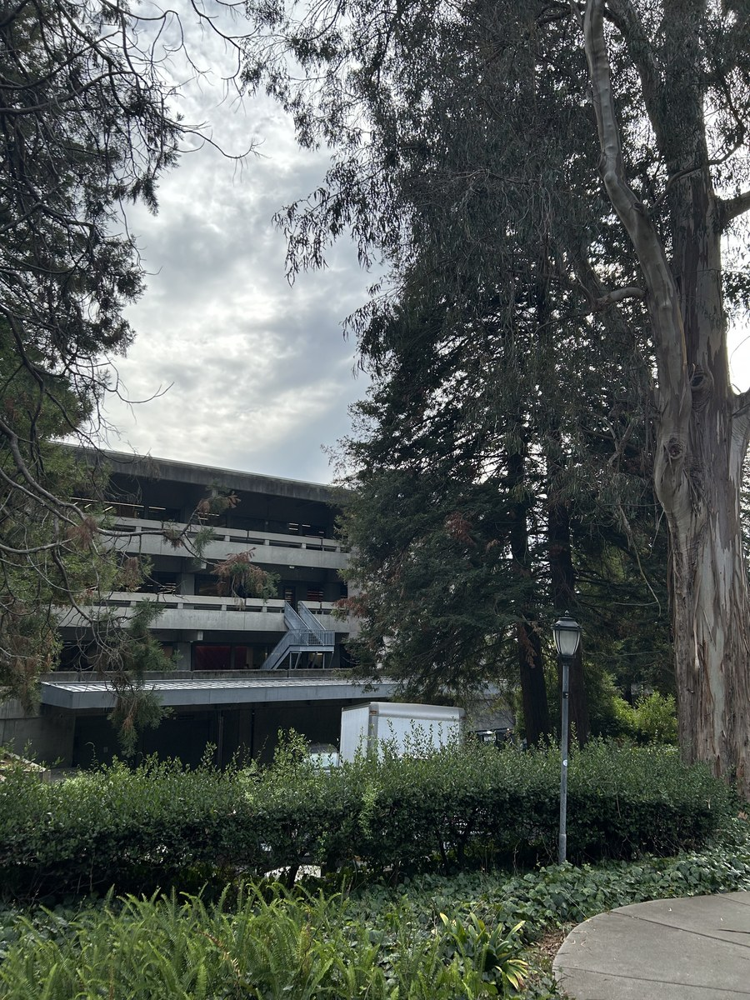
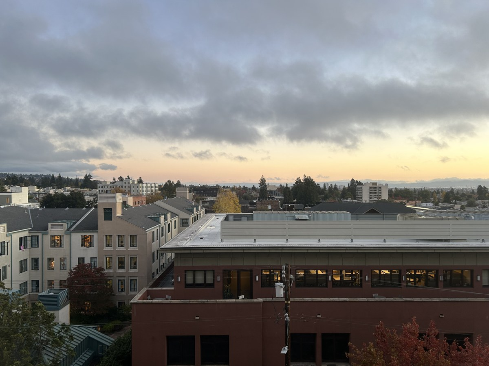
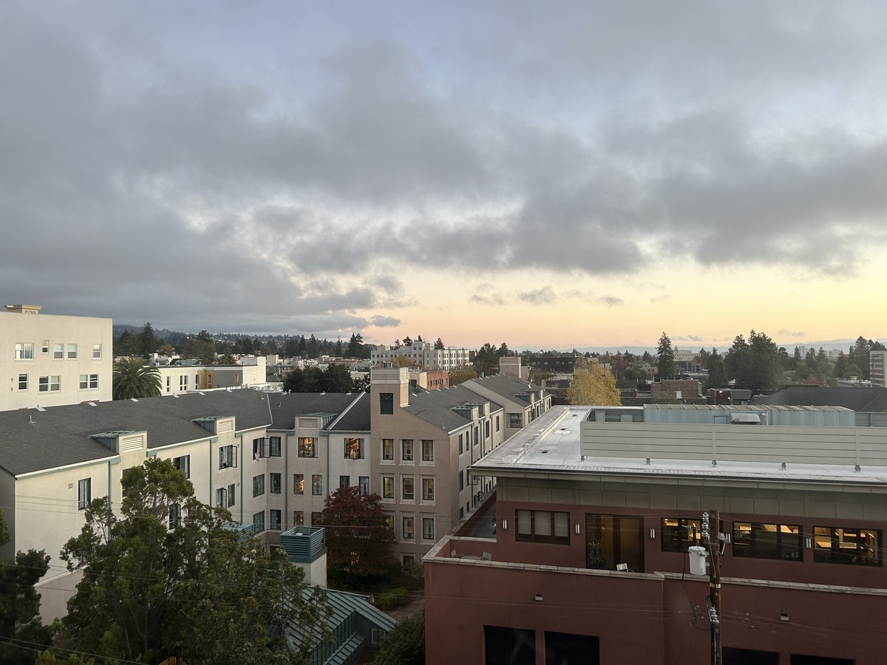
[WRITE: how you got the points (which tool), how many you clicked, and how you picked them, e.g. sharp corners on the building, spread out.]
[WRITE: the idea. Each pair of points gives two equations, H has 8 unknowns, so with more than 4 pairs there are more equations than unknowns and I solve it with least squares.]
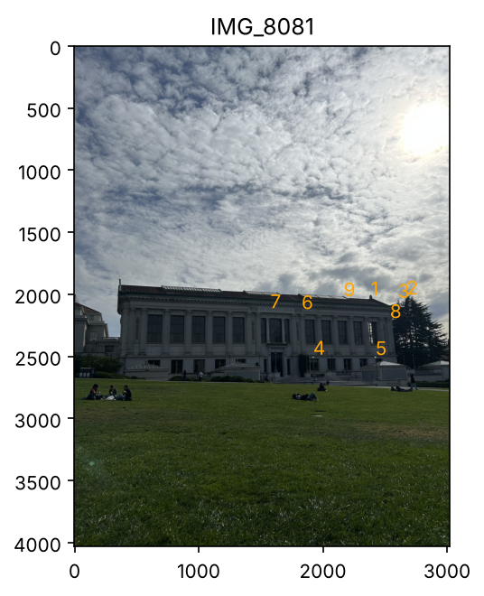
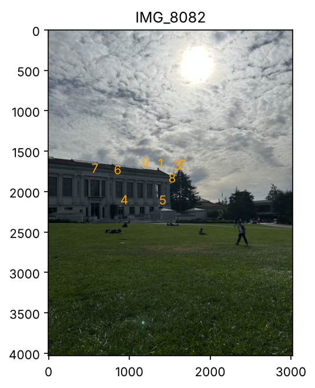
H has 8 unknowns:
H = [ a b c ]
[ d e f ]
[ g h 1 ]
It sends a point (x, y) to (x', y') like this:
x' = (ax + by + c) / (gx + hy + 1) y' = (dx + ey + f) / (gx + hy + 1)
Multiplying both sides by (gx + hy + 1) and moving things around, every pair of points gives two equations:
ax + by + c - gxx' - hyx' = x' dx + ey + f - gxy' - hyy' = y'
Stacking these for all 9 pairs gives 18 equations for 8 unknowns, which I solve with least squares. This is the H I got:
H = [ 1.679 -0.024 -1853.8 ]
[ 0.424 1.554 -1488.8 ]
[ 0.0002 0.00004 1 ]
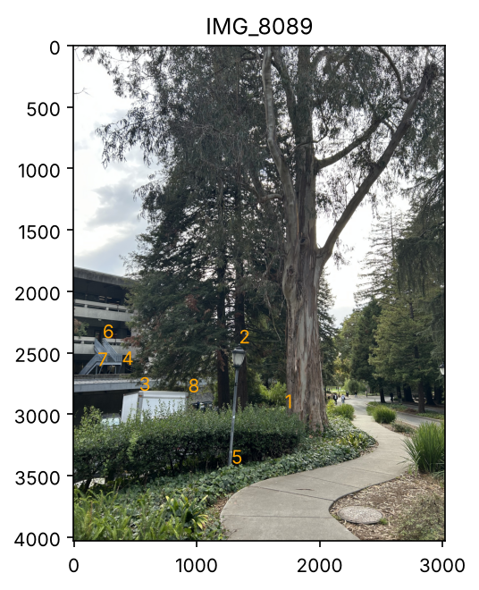
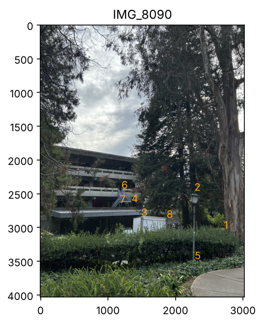
Same thing with 8 pairs (16 equations). This is the H I got:
H = [ 0.750 0.024 899.5 ]
[ -0.176 0.841 321.6 ]
[ -0.00007 -0.00002 1 ]
[WRITE: how inverse warping works in your code. e.g. send the 4 corners through H to get the output size, then for every output pixel go backwards with H inverse and look up the color in the original image. Pixels that land outside the image stay black.]
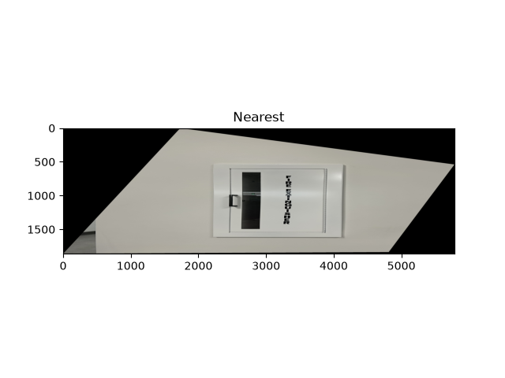
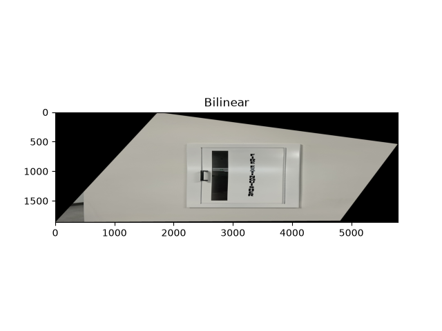
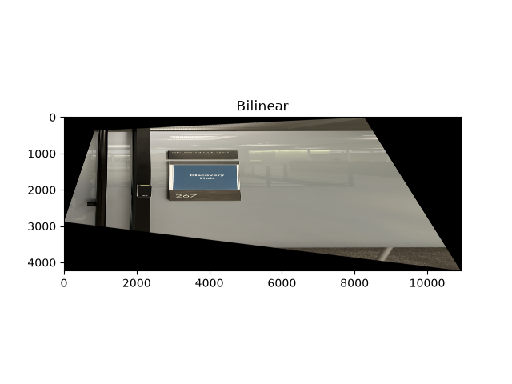
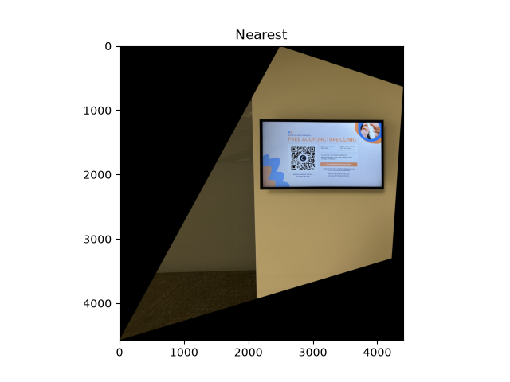
[WRITE: speed vs quality. e.g. nearest neighbor took [TIME] s and bilinear took [TIME] s. Nearest neighbor is faster but edges and text look jagged when you zoom in; bilinear is a bit slower but smoother.]
[WRITE: your procedure. e.g. kept one image as the reference, warped the other into it with H, figured out the full canvas size from the corners, and put both onto that canvas.]
[WRITE: how you blended. e.g. each image gets a weight that is 1 in the middle and falls off to 0 at the edges, then every pixel is the weighted average of the images that cover it, so there is no hard seam.]
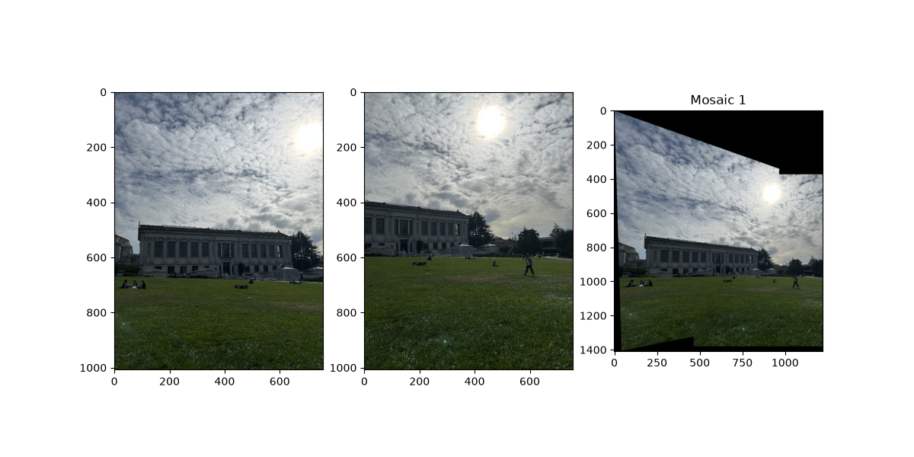
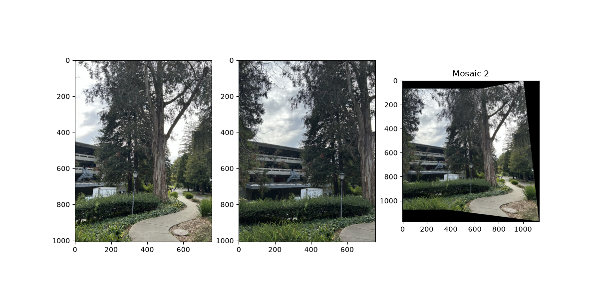
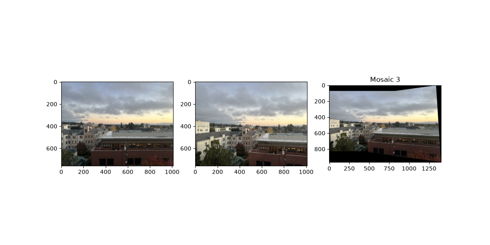
[WRITE: what you notice. e.g. where it lines up well, any ghosting on trees or people that moved, any brightness difference between the photos.]